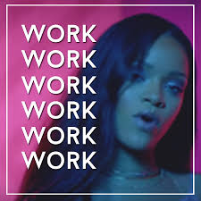

Matt Nardoni's Portfolio
"Introducing oneself is a great way to begin a portfolio webpage!"

Give The People What They Want
Who Am I And How Did I Get Here?
My name is Matt, but most people call me Nardo (short for my surname Nardoni). I came to Epicodus with experience gained from the University of Oregon but without the means to profit financially or emotionally. I have always been active with technology, yet I lacked any sort of in depth knowledge on the subject of computer technology or programming. Now I find myself combining my social, educational, and newly developed technical skills in an effort to impress myself on today's code review.
- Stats
- Hometown
- I'm from San Pedro, CA but have recently relocated to McMinnville, OR. I was born in august and grew up with 3 brothers.
- Activities
- I enjoy a variety of extracurriculars ranging from playing/watching sports to writing short stories and even going wine tasting if I am feeling fancy.
- Music
- What I am listening to right now: Grand Magus, The Eagles, Ray Charles, The Pogues, Queen, Johnny Cash.
How to get through the week (If you're me):
- Physical exercise is the most important thing I will do all day.
- Physical exercise is the most important thing I will do all day.
- I also enjoy reading political biographies and walking in the woods near my home.
Paying the Bills
With a few skills
- 
- My main skill is: Keeping a positive mindset, it helps me to approach any situation with a measure of enthusiasm.
- Pretty good at car karaoke
- If you're feeling generous you can donate Here!